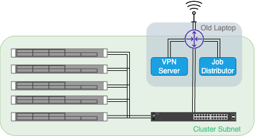

Intro As very little information about the dataset in the Numerai turnament is released, the search for optimal models and parameters isn't as guided as in other projects. A big number of experiments was necessary and taking the size of the dataset into account, it was clear that I couldn't perform them all on my laptop. I trained some models on AWS, but quickly realised that it would be very costly to try out all my ideas, so I started looking for second hand hardware to buy. I found out that companies throw out old servers at low prices and decided for a rack system. The finished cluster with all components. Composition An old laptop of mine, stripped to its essential parts and placed inside a rack mountable case is allways turned on and acts as: - Router - VPN server - Job Manager It will be called controller from now on. The controller is connnected to the WIFI and acts as a router to the servers. The servers iLO and internet ports are connected to the controller via a switch. To access the server subnet from an external device, the controller also acts as a VPN server. It is always on and waits for new jobs.  Network Diagram of the cluster. Job Handling Overview To send a job to the cluster, I wrote a client script to which you have to specify: Project folder path Name of the entrypoint script (e.g. main.py) Number of CPU cores required Amount of RAM required The script then uses a VPN connection to the controller to copy the project folder, and place the job description in the jobs folder of the controller. Every 2 minutes the controller: Checks the jobs folder for new jobs and places them in the queue. Tries to distribute the jobs in the queue to the running servers according to their requirements. Starts up a new server in case not all jobs could be distributed. Shuts down any idle servers. When a job is finished, the return data including stdout/stderr are copied back to the controller. There is a script that copies the return data of all finished jobs from the controller back to the client. Job Handling Script This script runs on the controller. There is a SERVER and a JOB class. In the beginning one SERVER object per physical server is initialised with the corresponding attributes (server id, ip address, available RAM, ...). Two threads are started, one to handle the job queue, the other one to host the website with current cluster status information. The job queue thread checks the jobs folder every two minutes, when a new job arrives it creates a JOB object and places it in the queue. It then tries to distribute the jobs in the queue by sending them to the running server with the least available resources that still fulfills the requirements. This is done to optimise the number of jobs that can be run in parallel (knapsack problem). To run a job on a server, the SERVER.run_job subroutine is called in a new thread, where: The job is appended to SERVER.running_jobs The jobs required resources are subtracted from SERVER.available_RAM and .available_CPU The project folder is copied from the controller to the server. A screen session is started on the server, where a new venv according to requirements.txt in the project folder is created and the specified entrypoint script is run. stdout/stderr is redirected to the jobs return folder together with the output files of the script. A screen session is started on the server, where a new venv according to requirements.txt in the project folder is created and the specified entrypoint script is run. stdout/stderr is redirected to the jobs return folder together with the output files of the script. Every 2 minutes the thread checks whether the screen session is still running on the server, if not it considers the job done and proceeds. The return folder is copied from the server to the controller. The job is removed from SERVER.running_jobs The jobs required resources are added to SERVER.available_RAM and .available_CPU The job thread is killed. 2022/23 Systems Data Science